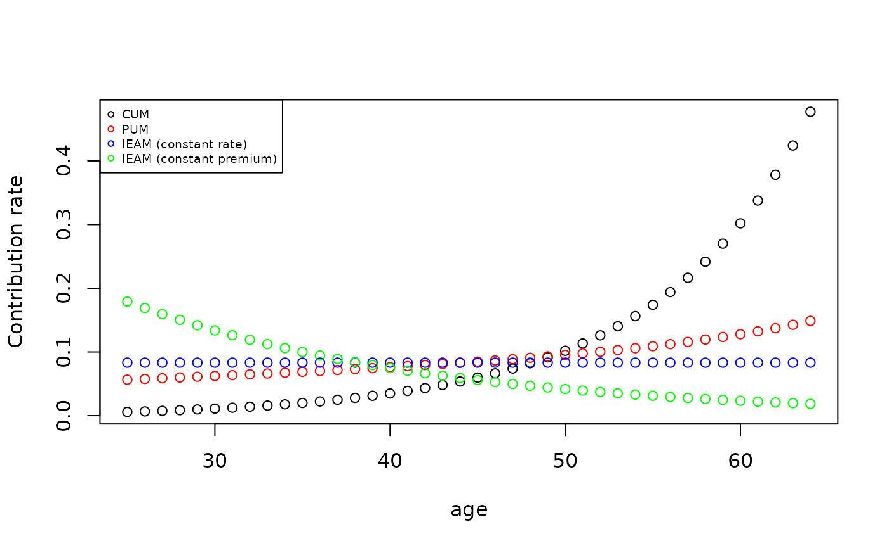
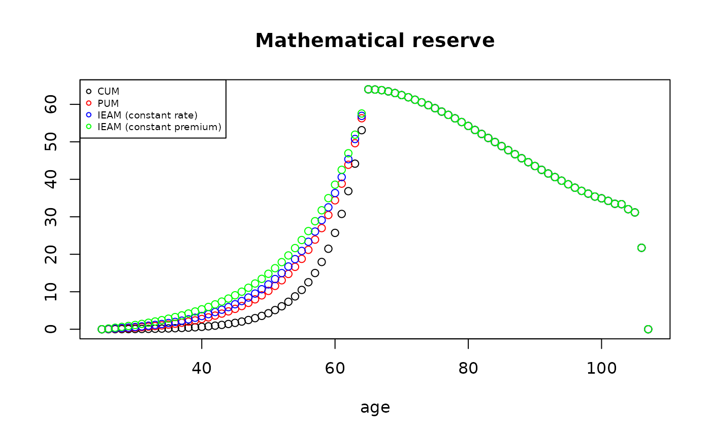

vignettes/pensionfunding.Rmd
pensionfunding.RmdIn other words, the pension plan guarantees a replacement ratio equal to: \[\begin{equation} RR_{\beta}=\frac{s_{\beta}}{b_{\beta}}=\left(\frac{\beta-\alpha}{t}\right) \end{equation}\]
Furthermore, we assume that annual earnings are increasing at a yearly flat rate \(i\): \[\begin{equation} s_{x}=s_{x-1}(1+j) \end{equation}\] This evolution of earnings, desibed by the rate \(j\), is usually considered to include two components:Our first aim is to quantify the level of contribution to be set at a level to produce the targeted pension on retirement. In this framework, two general approaches can be pursued. On one hand, the accrued benefits cost method defines the annual normal cost on the basis of portion of pension benefit matured at the valuation date. Accrued Benefits Funding Methods are indeed a major category of funding methods in which the Actuarial Liability for active members is based on pensionable service accrued up to the valuation date or to the end of the Control Period, asappropriate. Differences between the various Accrued Benefits Funding Methods arise from the treatment of decrements in membership and increases in pensionable pay when calculating the Actuarial Liabilities for active members. This affects the value placed not only on the Actuarial Liability but also on the Standard Contribution Rate. Main examples treated in the next are Current Unit Method and Projected Unit Method. \ On the other hand the Projected Benefit Cost Methods, that include several methods (as Individual Entry-Age Method for instance), quantifies a normal cost that represents an amount that will provide for the estimated projected retirement benefits over the service lives of either the individual employees or the employee group. Pension costs computed under this approach tend to be stable or decline year by year, depending on the method selected.
We begin by the Current Unit Method (CUM). The Actuarial Liability for active members is calculated taking into account all types of decrement (in our case only retirement). In calculating the Actuarial Liability as at the valuation date pensionable pay is not projected. It is now possible to define the following mathematical reserve V_{x} at age \(x\) (\(\alpha \leq x <\beta\)): \[\begin{equation} V_{x}={}_{\beta-x}E^{p^{ap},i^{ap}}_{x}\left(\frac{x-\alpha}{t}s_{x-1}\right)\ddot{a}^{p^{pp},u}_{\beta} \end{equation}\] where \(p^{ap}\) and \(p^{pp}\) are the survival probabilities in accumulation and payment periods respectively, \(i^{ap}\) is the technical financial rate in the accumulation period, \(u=\frac{1+i^{pp}}{1+\delta}-1\) is a syntethic index function of the technical financial rate \(i^{pp}\) in the payment period and the indexation of the pension amount. Notice that \(p^{pp}\) and \(j^{pp}\) may depend on premium rate requested by the insurer when an agreement is made between pension plan and insurer for the payments of annuity amounts. \({}_{\beta-x}E^{p^{ap},i^{ap}}_{x}=\frac{{}_{\beta-x}p^{ap}_{x}}{(1+i)^{\beta-x}}\) is the actuarial present value of a life-contingent \(\beta-x\)-year future payment of 1. While \(\ddot{a}^{p^{pp},u}_{\beta}\) is the expected present value for the life-annuity due of infinite-duration. By applying Fouret’s formula, it is easily derive the contribution rate \(\gamma_{x}\) as: \[\begin{equation} \gamma_{x}={}_{\beta-x}E^{p^{ap},i^{ap}}_{x}\frac{1}{t}\left(1+\frac{j}{1+j}(x-\alpha)\right)\ddot{a}^{p^{pp},u}_{\beta} \end{equation}\] In such calculations, allowance is made for increases in the benefits between the relevant date and the assumed date of retirement because of the future increases in salaries. Finally
The Projected Unit Method is based on a similar structure of CUM, but the pensionable pay is projected from the relevant date up to the assumed date of retirement. This method is also known as the Projected Unit Credit Method. We have then the following relations for the mathematical reserve and the contribution rate respectively: \[\begin{equation} V_{x}={}_{\beta-x}E^{p^{ap},i^{ap}}_{x}\left(\frac{x-\alpha}{t}s_{\beta-1}\right)\ddot{a}^{p^{pp},u}_{\beta} \end{equation}\] \[\begin{equation} \gamma_{x}={}_{\beta-x}E^{p^{ap},i^{ap}}_{x}\frac{1}{t}(1+j)^{\beta-x-1}\ddot{a}^{p^{pp},u}_{\beta} \end{equation}\] In this case, the normal cost depends yearly on a portion \(\frac{1}{t}\) of the expected earning at the last year of service before than retirement.
Finally, we consider Individual Entry-Age Method. This method assumes that every employee entered the plan (thus, entry age) at the time of employment and that contributions have been made on this basis from the entry age to the date of valuation. The contributions are the level annual amounts which, if accumulated at the rate of interest used in the actuarial valuation, would result in a fund equal to the present value of the pension benefits at retirement for employees that survive at that time. In this case the contribution rate is equal to the ratio of expected present value of future benefits to expected present value of future earnings: \[\begin{equation} \gamma_{x}=\frac{{}_{\beta-\alpha}E^{p^{ap},i^{ap}}_{\alpha}\left(\frac{\beta-\alpha}{t}s_{\beta-1}\right)\ddot{a}^{p^{pp},u}_{\beta}}{s_{\alpha}{}_{\beta-\alpha}\ddot{a}^{p^{pp},r}_{\alpha}} \end{equation}\] where \(u=\frac{1+i^{pp}}{1+j}-1\) is a syntethic index function of the technical financial rate \(i^{pp}\) in the payment period and the annual salary increase \(j\). In this case, \(\gamma_{x}\) is constant over time.
Mathematical reserve can be derived in a perspective view as: \[\begin{equation} V_{x}={}_{\beta-x}E^{p^{ap},i^{ap}}_{x}\left(\frac{\beta-\alpha}{t}s_{\beta-1}\right)\ddot{a}^{p^{pp},u}_{\beta}-\gamma_{x}s_{x}{}_{\beta-x}\ddot{a}^{p^{pp},r}_{x} \end{equation}\]
The CUM contribution rate is defined by following function:
CUM <- function(acttableAccPeriod, x, beta, i = actuarialtable@interest, j, t, k = 1,
payment = "advance", acttablePaymPeriod, i2, delta = 0) {
out <- numeric(1)
if (missing(acttableAccPeriod))
stop("Error! Need an actuarial actuarialtable")
if (missing(acttablePaymPeriod))
acttablePaymPeriod = acttableAccPeriod
if (missing(i2))
i2 = i
if (missing(x))
stop("Error! Need age!")
if (missing(beta))
stop("Error! Retirement age!")
if (x > getOmega(acttableAccPeriod)) {
out = 0
return(out)
}
if (missing(t))
stop("Error! Need t")
if (missing(j))
stop("Error! Need average salary increase rate")
if (any(x < 0, beta < 0, t < 0))
stop("Error! Negative parameters")
out = sapply(seq(x, beta - 1, 1), function(h) Exn(acttableAccPeriod, h, beta -
h, i = i) * ((1/t) + (h - x)/t * (j/(1 + j))) * axn(acttablePaymPeriod, beta,
i = (1 + i2)/(1 + delta) - 1, k = 1))
return(out)
}The mathematical reserve is instead equal to:
CUMmr <- function(acttableAccPeriod, x, beta, i = actuarialtable@interest, j, t,
k = 1, payment = "advance", acttablePaymPeriod, i2, delta = 0) {
out <- numeric(1)
if (missing(acttableAccPeriod))
stop("Error! Need an actuarial actuarialtable")
if (missing(acttablePaymPeriod))
acttablePaymPeriod = acttableAccPeriod
if (missing(i2))
i2 = i
if (missing(x))
stop("Error! Need age!")
if (missing(beta))
stop("Error! Retirement age!")
if (x > getOmega(acttableAccPeriod)) {
out = 0
return(out)
}
if (missing(t))
stop("Error! Need t")
if (missing(j))
stop("Error! Need average salary increase rate")
if (any(x < 0, beta < 0, t < 0))
stop("Error! Negative parameters")
out = c(sapply(seq(x, beta, 1), function(h) Exn(acttableAccPeriod, h, beta -
h, i = i) * ((h - x)/t * (1 + j)^(h - x - 1)) * axn(acttablePaymPeriod, beta,
i = (1 + i2)/(1 + delta) - 1, k = 1)), sapply(seq(beta + 1, getOmega(acttablePaymPeriod) +
1, 1), function(h) ((beta - x)/t * (1 + j)^(beta - x - 1)) * (1 + delta)^(h -
beta) * axn(acttablePaymPeriod, h, i = (1 + i2)/(1 + delta) - 1, k = 1)))
return(out)
}The PUM contribution rate is defined by the following function:
# Projected Unit Method
PUM <- function(acttableAccPeriod, x, beta, i = actuarialtable@interest, j, t, k = 1,
payment = "advance", acttablePaymPeriod, i2, delta = 0) {
out <- numeric(1)
if (missing(acttableAccPeriod))
stop("Error! Need an actuarial actuarialtable")
if (missing(acttablePaymPeriod))
acttablePaymPeriod = acttableAccPeriod
if (missing(i2))
i2 = i
if (missing(x))
stop("Error! Need age!")
if (missing(beta))
stop("Error! Retirement age!")
if (x > getOmega(acttableAccPeriod)) {
out = 0
return(out)
}
if (missing(t))
stop("Error! Need t")
if (missing(j))
stop("Error! Need average salary increase rate")
if (any(x < 0, beta < 0, t < 0))
stop("Error! Negative parameters")
out = sapply(seq(x, beta - 1, 1), function(h) Exn(acttableAccPeriod, h, beta -
h, i = i) * 1/t * axn(acttablePaymPeriod, beta, i = (1 + i2)/(1 + delta) -
1, k = 1) * (1 + j)^(beta - h - 1))
return(out)
}while the mathematical reserve is
PUMmr <- function(acttableAccPeriod, x, beta, i = actuarialtable@interest, j, t,
k = 1, payment = "advance", acttablePaymPeriod, i2, delta = 0) {
out <- numeric(1)
if (missing(acttableAccPeriod))
stop("Error! Need an actuarial actuarialtable")
if (missing(acttablePaymPeriod))
acttablePaymPeriod = acttableAccPeriod
if (missing(i2))
i2 = i
if (missing(x))
stop("Error! Need age!")
if (missing(beta))
stop("Error! Retirement age!")
if (x > getOmega(acttableAccPeriod)) {
out = 0
return(out)
}
if (missing(t))
stop("Error! Need t")
if (missing(j))
stop("Error! Need average salary increase rate")
if (any(x < 0, beta < 0, t < 0))
stop("Error! Negative parameters")
out = c(sapply(seq(x, beta, 1), function(h) Exn(acttableAccPeriod, h, beta -
h, i = i) * ((h - x)/t * (1 + j)^(beta - x - 1)) * axn(acttablePaymPeriod,
beta, i = (1 + i2)/(1 + delta) - 1, k = 1)), sapply(seq(beta + 1, getOmega(acttablePaymPeriod) +
1, 1), function(h) ((beta - x)/t * (1 + j)^(beta - x - 1)) * (1 + delta)^(h -
beta) * axn(acttablePaymPeriod, h, i = (1 + i2)/(1 + delta) - 1, k = 1)))
return(out)
}The IEAM is defined as follows:
# Individual Entry-Age Unit Method Type: 0 constant contribution rate, 1 #
# Constant Contribution amount (Default is 0)
IEAM <- function(acttableAccPeriod, x, beta, i = actuarialtable@interest, j, t, k = 1,
payment = "advance", acttablePaymPeriod, i2, delta = 0, type = 0) {
out <- numeric(1)
if (missing(acttableAccPeriod))
stop("Error! Need an actuarial actuarialtable")
if (missing(acttablePaymPeriod))
acttablePaymPeriod = acttableAccPeriod
if (missing(i2))
i2 = i
if (missing(x))
stop("Error! Need age!")
if (missing(beta))
stop("Error! Retirement age!")
if (x > getOmega(acttableAccPeriod)) {
out = 0
return(out)
}
if (missing(t))
stop("Error! Need t")
if (missing(j))
stop("Error! Need average salary increase rate")
if (any(x < 0, beta < 0, t < 0))
stop("Error! Negative parameters")
if (type == 0) {
out = (Exn(acttableAccPeriod, x, beta - x, i = i) * (beta - x)/t * axn(acttablePaymPeriod,
beta, i = (1 + i2)/(1 + delta) - 1, k = 1) * (1 + j)^(beta - x - 1))/(axn(acttablePaymPeriod,
x, beta - x, i = (1 + i)/(1 + j) - 1, k = 1, payment = "advance"))
} else {
out = ((Exn(acttableAccPeriod, x, beta - x, i = i) * (beta - x)/t * axn(acttablePaymPeriod,
beta, i = (1 + i2)/(1 + delta) - 1, k = 1) * (1 + j)^(beta - x - 1))/(axn(acttablePaymPeriod,
x, beta - x, i, k = 1, payment = "advance")))/(1 + j)^seq(0, beta - x -
1, 1)
}
return(out)
}while the reserve is:
IEAMmr <- function(acttableAccPeriod, x, beta, i = actuarialtable@interest, j, t,
k = 1, payment = "advance", acttablePaymPeriod, i2, delta = 0, type = 0) {
out <- numeric(1)
if (missing(acttableAccPeriod))
stop("Error! Need an actuarial actuarialtable")
if (missing(acttablePaymPeriod))
acttablePaymPeriod = acttableAccPeriod
if (missing(i2))
i2 = i
if (missing(x))
stop("Error! Need age!")
if (missing(beta))
stop("Error! Retirement age!")
if (x > getOmega(acttableAccPeriod)) {
out = 0
return(out)
}
if (missing(t))
stop("Error! Need t")
if (missing(j))
stop("Error! Need average salary increase rate")
if (any(x < 0, beta < 0, t < 0))
stop("Error! Negative parameters")
al = IEAM(acttableAccPeriod, x, beta, i, j, t, k = 1, payment, acttablePaymPeriod,
i2, delta, type)
if (type == 0) {
out = c(sapply(seq(x, beta, 1), function(h) Exn(acttableAccPeriod, h, beta -
h, i = i) * ((beta - x)/t * (1 + j)^(beta - x - 1)) * axn(acttablePaymPeriod,
beta, i = (1 + i2)/(1 + delta) - 1, k = 1) - al * (1 + j)^(h - x) * axn(acttableAccPeriod,
h, beta - h, i = (1 + i)/(1 + j) - 1, k = 1)), sapply(seq(beta + 1, getOmega(acttablePaymPeriod) +
1, 1), function(h) ((beta - x)/t * (1 + j)^(beta - x - 1)) * (1 + delta)^(h -
beta) * axn(acttablePaymPeriod, h, i = (1 + i2)/(1 + delta) - 1, k = 1)))
} else {
out = c(sapply(seq(x, beta - 1, 1), function(h) Exn(acttableAccPeriod, h,
beta - h, i = i) * ((beta - x)/t * (1 + j)^(beta - x - 1)) * axn(acttablePaymPeriod,
beta, i = (1 + i2)/(1 + delta) - 1, k = 1) - al[h - x + 1] * (1 + j)^(h -
x) * axn(acttableAccPeriod, h, beta - h, i, k = 1)), sapply(seq(beta,
getOmega(acttablePaymPeriod) + 1, 1), function(h) ((beta - x)/t * (1 +
j)^(beta - x - 1)) * (1 + delta)^(h - beta) * axn(acttablePaymPeriod,
h, i = (1 + i2)/(1 + delta) - 1, k = 1)))
}
return(out)
}We consider a pension fund based on a single cohort of age \(x=25\). Furthermore, we assume that the DB pension fund has based the quantification of the contribution rate on the following assumptions:
#Current Unit Method
beta=65 # Beta Retirement age
x=25 #x Age of the insured.
i=0.08 # Interest Rate
t=60 #1/t is the % of the salary, recognized as retirement pension, for each year of service
j=0.06 # average salary increases (for both growth in wages and promotional salary for seniority)
delta=0.03 #Increase of retirement pensionTherefore, the following Figure shows the pattern of the contribution rates according to the three methods. As expected, Current Unit Method, being based on the current salary, shows a very increasing tendency over time. Differences with respect to PUM depends on the value of \(j\). It is indeed easy to prove that both methods lead to the same rates when \(j=0\).
CUM(lt, x, beta, i, j, t, k, delta = 0.03)
#> [1] 0.005822138 0.006650426 0.007574599 0.008604814 0.009752572 0.011030349
#> [7] 0.012451659 0.014031470 0.015785917 0.017732613 0.019892423 0.022287570
#> [13] 0.024944411 0.027891562 0.031161684 0.034789025 0.038809741 0.043261288
#> [19] 0.048190217 0.053654252 0.059720601 0.066460108 0.073948311 0.082275637
#> [25] 0.091541182 0.101843507 0.113305658 0.126075296 0.140313448 0.156231670
#> [31] 0.174053818 0.194038950 0.216455210 0.241663403 0.270040950 0.301944371
#> [37] 0.337753233 0.378197856 0.424173906 0.477146484
PUM(lt, x, beta, i, j, t, k, delta = 0.03)
#> [1] 0.05649516 0.05761827 0.05876254 0.05992897 0.06112051 0.06233840
#> [7] 0.06358260 0.06485374 0.06615106 0.06747371 0.06882648 0.07021087
#> [13] 0.07163372 0.07309933 0.07461391 0.07617857 0.07779114 0.07944581
#> [19] 0.08114731 0.08290956 0.08474870 0.08667313 0.08868637 0.09079901
#> [25] 0.09301872 0.09534136 0.09777603 0.10033939 0.10304315 0.10591941
#> [31] 0.10898737 0.11226874 0.11577071 0.11953040 0.12356718 0.12787015
#> [37] 0.13242412 0.13732918 0.14269515 0.14875743
IEAM(lt, x, beta, i, j, t, k, delta = 0.03, type = 0)
#> [1] 0.08319755
plot(seq(x, beta - 1, 1), CUM(lt, x, beta, i, j, t, k, delta = 0.03), xlab = "age",
ylab = "Contribution rate")
lines(seq(x, beta - 1, 1), PUM(lt, x, beta, i, j, t, k, delta = 0.03), type = "p",
col = "red")
lines(seq(x, beta - 1, 1), rep(IEAM(lt, x, beta, i, j, t, k, delta = 0.03), beta -
x), type = "p", col = "blue")
lines(seq(x, beta - 1, 1), IEAM(lt, x, beta, i, j, t, k, delta = 0.03, type = 1),
type = "p", col = "green")
legend("topleft", c("CUM", "PUM", "IEAM (constant rate)", "IEAM (constant premium)"),
col = c("black", "red", "blue", "green"), pch = c(1, 1, 1, 1), cex = 0.6) According to the mathematical reserve, we observe in the following figure the different behaviour in the accumulation period.
CUMmr(lt, x, beta, i, j, t, k, delta = 0.03)
#> [1] 0.000000000 0.006294153 0.014425118 0.024794687 0.037884301
#> [6] 0.054268732 0.074632040 0.099788513 0.130703134 0.168518676
#> [11] 0.214604216 0.270577376 0.338380158 0.420314741 0.519131606
#> [16] 0.638065743 0.780913988 0.952104764 1.156972896 1.401995135
#> [21] 1.694973952 2.045104602 2.463218975 2.962403170 3.558184907
#> [26] 4.268546553 5.115359373 6.125158439 7.329443344 8.767567809
#> [31] 10.486117818 12.541502867 14.999937417 17.945055126 21.475647617
#> [36] 25.704738153 30.765026526 36.843761121 44.177787148 53.108760175
#> [41] 64.013001539 63.950042392 63.786308425 63.458208104 63.010871760
#> [46] 62.470417921 61.892955313 61.234081591 60.541207872 59.775674960
#> [51] 58.978980578 58.068490145 57.190779730 56.267230926 55.281780098
#> [56] 54.237763837 53.161703025 52.103448744 51.030105894 49.948433457
#> [61] 48.860816588 47.771875163 46.694105327 45.623247698 44.574315474
#> [66] 43.540573624 42.529253726 41.546222447 40.588424897 39.630039904
#> [71] 38.672686843 37.759069201 36.916230493 36.183917639 35.402016497
#> [76] 34.928684057 34.246062791 33.473705370 33.371432327 32.030006954
#> [81] 31.164732706 21.735202923 0.000000000
PUMmr(lt, x, beta, i, j, t, k, delta = 0.03)
#> [1] 0.00000000 0.06107536 0.13205117 0.21412908 0.30865295 0.41711418
#> [7] 0.54115881 0.68261229 0.84347787 1.02595866 1.23257742 1.46609318
#> [13] 1.72969335 2.02690308 2.36172848 2.73849568 3.16186970 3.63680185
#> [19] 4.16919512 4.76617163 5.43601108 6.18766746 7.03086236 7.97707864
#> [25] 9.03904102 10.22982022 11.56533624 13.06452353 14.74828004 16.64346133
#> [31] 18.77903994 21.18860521 23.90762137 26.98272789 30.46361659 34.39873806
#> [37] 38.84013716 43.88150900 49.63816164 56.29528579 64.01300154 63.95004239
#> [43] 63.78630843 63.45820810 63.01087176 62.47041792 61.89295531 61.23408159
#> [49] 60.54120787 59.77567496 58.97898058 58.06849015 57.19077973 56.26723093
#> [55] 55.28178010 54.23776384 53.16170302 52.10344874 51.03010589 49.94843346
#> [61] 48.86081659 47.77187516 46.69410533 45.62324770 44.57431547 43.54057362
#> [67] 42.52925373 41.54622245 40.58842490 39.63003990 38.67268684 37.75906920
#> [73] 36.91623049 36.18391764 35.40201650 34.92868406 34.24606279 33.47370537
#> [79] 33.37143233 32.03000695 31.16473271 21.73520292 0.00000000
IEAMmr(lt, x, beta, i, j, t, k, delta = 0.03, type = 0)
#> [1] 4.440892e-16 8.994257e-02 1.925698e-01 3.092323e-01 4.414268e-01
#> [6] 5.907917e-01 7.591110e-01 9.483436e-01 1.160610e+00 1.398215e+00
#> [11] 1.663804e+00 1.960217e+00 2.290740e+00 2.658950e+00 3.068884e+00
#> [16] 3.524802e+00 4.031206e+00 4.592767e+00 5.215158e+00 5.905308e+00
#> [21] 6.671225e+00 7.521333e+00 8.464569e+00 9.511545e+00 1.067381e+01
#> [26] 1.196274e+01 1.339248e+01 1.497992e+01 1.674333e+01 1.870671e+01
#> [31] 2.089515e+01 2.333748e+01 2.606302e+01 2.911159e+01 3.252407e+01
#> [36] 3.633779e+01 4.059181e+01 4.536618e+01 5.075851e+01 5.693145e+01
#> [41] 6.401300e+01 6.395004e+01 6.378631e+01 6.345821e+01 6.301087e+01
#> [46] 6.247042e+01 6.189296e+01 6.123408e+01 6.054121e+01 5.977567e+01
#> [51] 5.897898e+01 5.806849e+01 5.719078e+01 5.626723e+01 5.528178e+01
#> [56] 5.423776e+01 5.316170e+01 5.210345e+01 5.103011e+01 4.994843e+01
#> [61] 4.886082e+01 4.777188e+01 4.669411e+01 4.562325e+01 4.457432e+01
#> [66] 4.354057e+01 4.252925e+01 4.154622e+01 4.058842e+01 3.963004e+01
#> [71] 3.867269e+01 3.775907e+01 3.691623e+01 3.618392e+01 3.540202e+01
#> [76] 3.492868e+01 3.424606e+01 3.347371e+01 3.337143e+01 3.203001e+01
#> [81] 3.116473e+01 2.173520e+01 0.000000e+00
IEAMmr(lt, x, beta, i, j, t, k, delta = 0.03, type = 1)
#> [1] 4.440892e-16 1.936447e-01 4.029806e-01 6.292776e-01 8.739418e-01
#> [6] 1.138491e+00 1.424546e+00 1.733873e+00 2.068339e+00 2.429942e+00
#> [11] 2.821056e+00 3.244157e+00 3.702213e+00 4.198391e+00 4.736307e+00
#> [16] 5.319617e+00 5.952047e+00 6.637279e+00 7.380133e+00 8.186823e+00
#> [21] 9.064614e+00 1.002086e+01 1.106312e+01 1.220065e+01 1.344336e+01
#> [26] 1.480039e+01 1.628376e+01 1.790815e+01 1.968913e+01 2.164821e+01
#> [31] 2.380714e+01 2.619094e+01 2.882417e+01 3.174190e+01 3.497900e+01
#> [36] 3.856538e+01 4.253181e+01 4.695055e+01 5.190948e+01 5.755963e+01
#> [41] 6.401300e+01 6.395004e+01 6.378631e+01 6.345821e+01 6.301087e+01
#> [46] 6.247042e+01 6.189296e+01 6.123408e+01 6.054121e+01 5.977567e+01
#> [51] 5.897898e+01 5.806849e+01 5.719078e+01 5.626723e+01 5.528178e+01
#> [56] 5.423776e+01 5.316170e+01 5.210345e+01 5.103011e+01 4.994843e+01
#> [61] 4.886082e+01 4.777188e+01 4.669411e+01 4.562325e+01 4.457432e+01
#> [66] 4.354057e+01 4.252925e+01 4.154622e+01 4.058842e+01 3.963004e+01
#> [71] 3.867269e+01 3.775907e+01 3.691623e+01 3.618392e+01 3.540202e+01
#> [76] 3.492868e+01 3.424606e+01 3.347371e+01 3.337143e+01 3.203001e+01
#> [81] 3.116473e+01 2.173520e+01 0.000000e+00
plot(seq(x, getOmega(lt) + 1, 1), CUMmr(lt, x, beta, i, j, t, k, delta = 0.03), xlab = "age",
ylab = "", main = "Mathematical reserve")
lines(seq(x, getOmega(lt) + 1, 1), PUMmr(lt, x, beta, i, j, t, k, delta = 0.03),
type = "p", col = "red")
lines(seq(x, getOmega(lt) + 1, 1), IEAMmr(lt, x, beta, i, j, t, k, delta = 0.03,
type = 0), type = "p", col = "blue")
lines(seq(x, getOmega(lt) + 1, 1), IEAMmr(lt, x, beta, i, j, t, k, delta = 0.03,
type = 1), type = "p", col = "green")
legend("topleft", c("CUM", "PUM", "IEAM (constant rate)", "IEAM (constant premium)"),
col = c("black", "red", "blue", "green"), pch = c(1, 1, 1, 1), cex = 0.6)